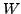

Next: Accumulated symmetric matrix eigendecomposition
Up: General size matrices
Previous: Cholesky factorising a general
Contents
#include <gandalf/linalg/mat_symmetric.h>
Gandalf has a routine for computing the real eigenvalues and eigenvectors of
a general size symmetric matrix, based on either the
CLAPACK routine dspev() or the CCMath routine eigval().
A symmetric matrix  can be written as
can be written as
where  is a diagonal matrix of real eigenvalues and  is a square
matrix of orthognal eigenvectors, unique if the eigenvalues are distinct.
If the matrix is positive definite (or semi-definite) then all the eigenvalues
will be (or ). Here is an example code fragment using the
Gandalf routine to compute and (optionally) .
is a square
matrix of orthognal eigenvectors, unique if the eigenvalues are distinct.
If the matrix is positive definite (or semi-definite) then all the eigenvalues
will be (or ). Here is an example code fragment using the
Gandalf routine to compute and (optionally) .
Gan_SquMatrix smS; /* declare symmetric matrix */
Gan_SquMatrix smW; /* declare matrix of eigenvalues W */
Gan_Matrix mZ; /* declare matrix of eigenvectors */
/* create and fill S */
gan_symmat_form ( &smS, 5 );
gan_symmat_fill_va ( &smS, 5,
1.0,
2.0, 3.0,
4.0, 5.0, 6.0,
7.0, 8.0, 9.0, 10.0,
11.0, 12.0, 13.0, 14.0, 15.0 );
/* create Z and W */
gan_mat_form ( &mZ, 5, 5 );
gan_diagmat_form ( &smW, 0 );
/* compute sigenvalues and eigenvectors of S */
gan_symmat_eigen ( &smS, &smW, &mZ, GAN_TRUE, NULL, 0 );
After calling this routine smW will contain the computed eigenvalues,
and mZ the eigenvectors. If the eigenvector matrix is passed as
NULL, the eigenvectors are not computed. The boolean fourth argument
indicates whether the eigenvectors should be sorted into ascending order.
The fifth and sixth arguments define a workspace array of doubles,
and the size of the array, which can be used by LAPACK. If passed as
NULL, 0 as above, the workspace is allocated inside the function.
Next: Accumulated symmetric matrix eigendecomposition
Up: General size matrices
Previous: Cholesky factorising a general
Contents
Philip McLauchlan
2009-01-27